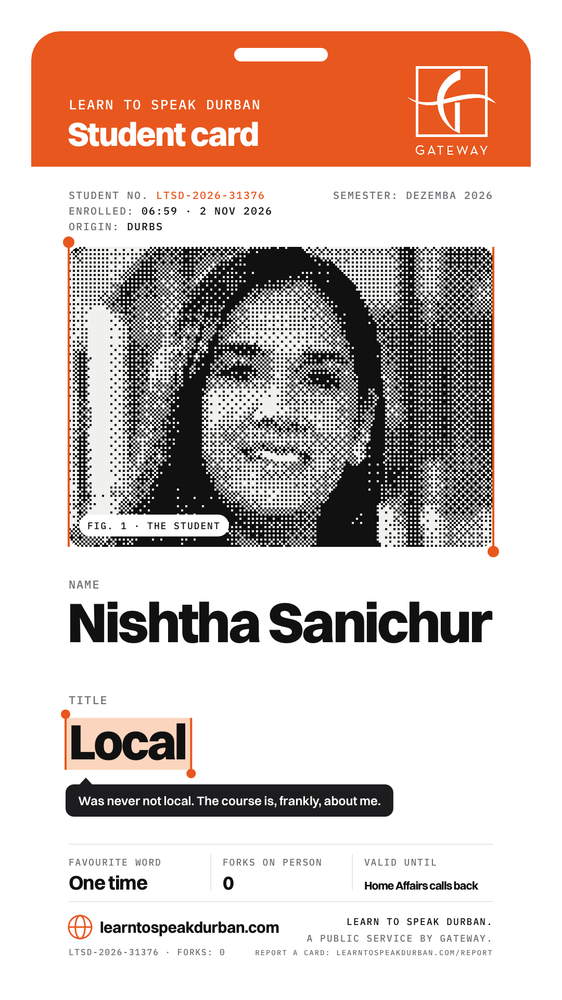
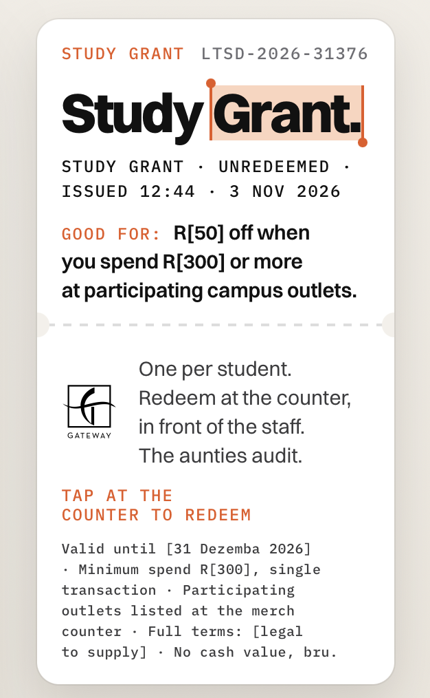

Parents’ evening.
Dear Nishtha, your child, Gateway, has been doing very well in Durban Studies. Please attend to review its coursework, its marks and its plans for next term.
I will attend parents’ evening and, being from Durban, already know what “shap shap” means.
Learn tospeakDurban.CopyLook UpTranslate
A public service by Gateway.
Durban is the place to be.
December lives here. The campaign’s job is to make the country feel that — and route the feeling through Gateway.
Why a mall sells the city, not itself.
Nobody drives 600km to a mall. They drive to a December.
The city is the draw; the mall is where the arrival gets collected.
Destination first, venue second.
Sell the place, own the port of entry. Gateway is the port of entry with a roof.
When the city wins, the tills count it.
More December visitors means more trading density — and turnover-linked rentals turn that into fund income.
Durban is the draw. Once they’re here, they’ll go to a mall anyway — this campaign makes sure Gateway is the first one on their mind.
Joburg already has opinions about Durban. We gave them the vocabulary.
The rivalry is old and affectionate: Durban is slow, Joburg is in a hurry. The campaign doesn’t fight it — it enrols it. The jokes tease behaviour Joburgers recognise in themselves, which is exactly why they forward them.
Taught, not sold.
People skip adverts. Nobody skips a lesson with their name on the card. A course earns attention an ad has to rent.
A lesson asks for a minute and gets it; an ad asks for a second and doesn’t. The format earns time on the M1, in the inbox and in the group chat.
44 lessons, daily games, a real exam on 1 Dezemba.
44 words are a membership card. Belonging is the strongest travel motivator there is.
Knowing the local word is the difference between visiting and arriving. Every Joburger who says “shap shap” on the promenade has joined the club — and wants to be seen joining it.
A student card with their name on it, faculty badges for locals, a graduation.
Michelin built a restaurant guide to sell tyres. Guinness built a records book to settle pub arguments. Gateway built a school. The brand is the author, not the wallpaper.
Brands that do something useful get remembered as the one that did it. Gateway isn’t in the ad break; it’s on the certificate.
“A public service by Gateway” on every asset; graduation and merch at the mall.
The campaign never asks to be watched. It asks to be learned — and people show their homework to each other.
Why it sticks.
Effort creates value.
People value what they build. A word you learned is yours; a certificate you sat an exam for gets framed.
One word a day.
A drip beats a blast. 44 lessons and daily games put the campaign back in memory every day of Dezemba.
Look clever, share more.
People pass on what makes them look in on the joke. Stickers, the Ekselator and tag cards are built to be passed on.
A finish line pulls.
The closer the exam, the harder people push. And the finish line is at Gateway.
An ad has to be remembered. A course gets revised.
Some people can’t speak Durban. So Gateway built them a course.
From the M1 to the merch counter.
Gauteng
A board on the M1 at 7am.
Gauteng
One email. A student card with their name on it.
Anywhere
A daily game, every day of Dezemba.
Everywhere
Stickers, Ekselator screenshots, tag cards.
Durban
Durban — with the vocabulary.
Gateway
At Gateway: the Study Grant redeemed, merch collected.
Every step hands the student to the next one. The last step has a till.
Why everything looks like a lookup.
KiffCopyLook UpTranslate
Kiff (adj.) — a feeling; really, properly good.
The gesture everyone makes at a word they don’t know. Every asset shows a word mid-lookup.
The textbook and the index card, not the billboard.
Sentence case lets the words do the shouting. Mono carries the course: lesson numbers, LTSD codes.
Every surface is built from the same few parts: cheap, fast, ours.
It looks like someone looking up a word. That’s exactly what we want Joburg doing.
How it sounds.
“Our robots have ocean views. Yours have more robots.”
“A paragraph means they’re cancelling. ‘Shap shap’ means they’re coming.”
“‘The owens are five minutes away.’ The owens have not left the house.”
Examples from the 44 lessons. Every word comes with its own line; lines and placements are still open.
More from the syllabus.
“A warm ocean is kiff. A heated pool is a bath with admin.”
“Choon your boss you’re taking Friday. Notice we didn’t say ask.”
“Duck out on Friday. By Monday you’re a rumour with a tan.”
The joke is always on the inland habit — the meeting, the boss, the heated pool.
Still more homework.
“‘Like’ is for LinkedIn. Smaak is for Durban.”
“Come chow prawns that saw the ocean this morning. Yours flew in.”
“A vaalie packs for Durban like it has weather. It has one: nice.”
Forty-four words, forty-four lines. Pick the ones that fit the site.
Vy the group chat from 2012. Vy the gym contract. Vy Joburg in Dezemba.
Vy (v.) — to leave. Lesson 28.
Five billboards, five jobs — the whole Joburg buy.
Site five: the Aweh launch board, N3 southbound. Boards carry the URL only — drive-by media builds memory; the click happens where people stand still.
The street assembles the sentence.
The course, out loud.
Baggies
The fragrance ad.
Bunny
The crime scene.
The coast
The GPS.
Every spot ends the way every board does: the lesson, then “A public service by Gateway.”
Baggies
The fragrance ad
Perfume-ad music. Soft waves.
(whispered) L’océan. Vingt-quatre degrés. And a man… wears nothing… but Baggies.
(beat)
No neoprene. No hood. No fear. Just… polyester. And freedom.
Baggies. By Durban.
(beat)
Now available… wherever the water is twenty-four degrees. So. One place.
Lesson five: “Baggies.” Learn to Speak Durban. A public service by Gateway.
Bunny
The crime scene
Police radio crackle. Rain.
(gravelly) What do we got?
(shaken) Sir… it’s a bunny chow. Joburg-style.
How bad?
There’s a side salad.
God.
That’s not all, sir. (beat) A fork.
(long exhale) Twenty years on this beat… The bread, son. The bread IS the fork.
There’s a garnish, sir—
GET ME DURBAN ON THE PHONE.
Lesson thirteen: “Bunny.” Learn to Speak Durban. A public service by Gateway.
The coast
The GPS
Car interior. Indicator ticking.
(posh robot) You have arrived at: the beach.
See, babe? The Vaal. Basically a beach.
…This is a dam, Gareth.
There’s sand—
That is mud, Gareth. For a real beach, continue six hundred kilometres east. The coast. The East Coast.
That’s far, my petrol—
Start the car, Gareth. I will drive us there myself.
Lesson seventeen: “The coast.” Learn to Speak Durban. A public service by Gateway.
The campus, open now.
- Free, no passwords
- 44 lessons + dictionary
- The Ekselator
- The exam — locks until 1 Dezemba, server time
Built to be played, built to be forwarded.
Dailies bring people back every day of Dezemba. The Ekselator turns office emails into screenshots — the campaign’s organic engine.
Identity, loyalty and the voucher in one.
Name, chosen title, origin, enrolment date, unique student number.
Claimed on the card after enrolment, redeemed once at the counter, a one-way flip with a live timestamp. Screenshot-proof.
Every redemption is a provable, logged campaign visit with minimum spend attached. The card is the attribution machine wearing a joke.
“Officially enrolled in Learn to Speak Durban, a public service by Gateway. Fluency: guaranteed-ish. Forks: 0. Enrol at https://learntospeakdurban.com #LearnToSpeakDurban #GatewayTheatreOfShopping”

Enrol once. We’ll remind you daily.
Reminders, lessons and updates from enrolment to graduation. The inbox is the classroom nobody has to remember to visit.
The campus performs daily.
Even the empty shops are in class.
A vacant frontage is dead rent with the lights on. The hoarding turns it into a live demonstration — print cost only, peeled off the day the lease signs.
The building teaches.
Most of this is decal money, not media money.
Pass online. Collect in person.

Study Grant voucherThe merch is collect-at-Gateway only, against a student card. Nobody graduates by courier.
Cheap, placed, true.
“You’re at the beach. Correct. The campus is 15 minutes that way.”
The syllabus came from you. The course just wrote it down.
The story is the ad.
Poll, tap, hold, link, question, screenshot: the platform’s own buttons do the punchline.
The feed runs the syllabus.
Forty-four words is forty-four posts. The content calendar was finished before the campaign started.
Made to be tagged at someone.
One word, one victim, one @. Built for the comments, where a friend serves the ad.
Gateway answers in the voice. The brand replies with homework, never with “thanks for your feedback”.
Installed in the family group.
The campaign goes to work with them.
Assets people install — carrying the campaign into offices unpaid.
Behaviour you can count.
the Study Grant: issued on enrolment, redeemed once in-store, logged with a timestamp; a minimum spend puts guaranteed till revenue under every redemption; pool capped.
collect-at-Gateway only, against a student card: every collection a provable campaign visit.
every QR and short link coded per placement; the report says which surface delivered which feet.
consented emails, origin on every card, signup location in analytics: Gauteng demand measured before a car leaves.
Footfall and trading density against last December set the headline; redemptions are the attributed floor nobody can argue with.
Three layers.
review ratings and tone, social listening, search interest, taken before teaser week.
Durdle shares, postcards, submissions, playlist follows, badges — voluntary acts of affection, counted weekly, plus tone-coded comments and coverage.
pre/post brand-lift in Gauteng and KZN; budget-light fallback: intercepts plus a two-question site pop-up.
Feet and vouchers prove behaviour. Sentiment proves durability.
One trip becomes a habit.
A December visitor who liked Gateway comes back in March. Goodwill keeps footfall coming after the campaign stops paying for it.
Liked brands buy less media.
Every point of warmth this December lowers what it costs to fill the mall next Dezemba. Term 2 starts warm, not cold.
Tenants follow reputation.
A mall people talk about warmly is an easier leasing conversation — and an easier renewal.
A spike vs. an asset.
Footfall bought with promotions leaves with them. Footfall that likes you holds. That is the difference a valuer can see.
Vouchers count this December. Sentiment pays for the next ten.
What Gateway owns on 1 January.
The database
The channels
WhatsApp audience, the playlist, Gateway’s own accounts.
The school
Site, games, voice — Term 2 in January, re-enrolment next Dezemba at a fraction of the build.
The goodwill
Faculty badges, a city cast as teachers, the earned-media record.
Aweh.CopyLook UpTranslate
The water’s warm. The school is built. We’d like to open it.
— Learn to Speak Durban. A public service by Gateway.
learntospeakdurban.com
Thank you, Nishtha.
For the time, the patience and the tea. Your child is doing well, and wants to spend December showing off. We’d like to let it.